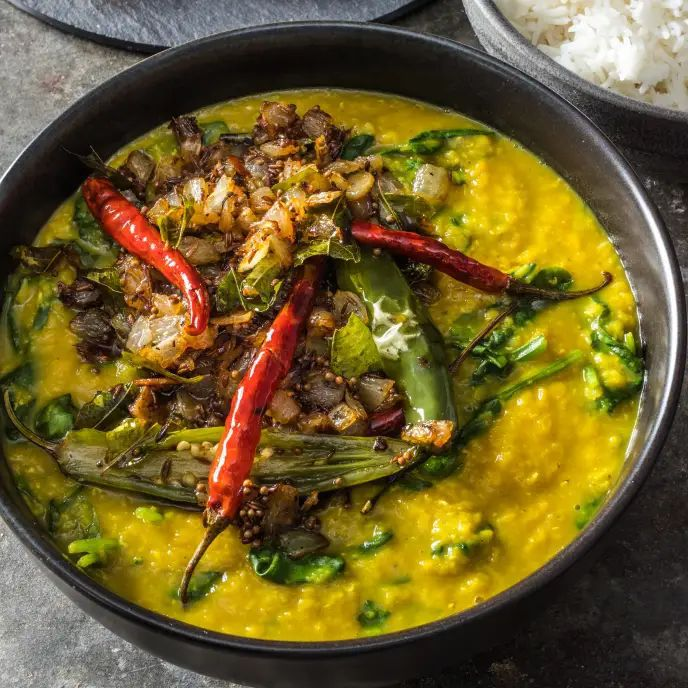

Palak Dal

Description
A very tasty lentil and spinach dish, topped with a chili-infused oil known as chhonk. (Originally taken from Cook's Illustrated magazine.)
Ingredients
Spinach Dal
- 1 1/2 cups (10½ ounces) dried red lentils, picked over and rinsed
- 1 tbsp grated fresh ginger
- 3/4 tsp ground turmeric
- 6 oz (6 cups) baby spinach
- 1 1/2 tsp table salt
Chhonk
- 3 tblsp ghee
- 1 1/2 tsp brown mustard seeds
- 1 1/2 tsp cumin seeds
- 1 large onion, chopped
- 15 curry leaves, roughly torn
- 6 garlic cloves, sliced
- 4 whole dried arbol chiles
- 1 serrano chile, halved lengthwise
- 1 1/2 tsp lemon juice, plus extra for seasoning
- 1/3 cup chopped fresh cilantro
Steps
- Bring 4½ cups water, lentils, ginger, and turmeric to boil in large saucepan over medium-high heat. Reduce heat to maintain vigorous simmer. Cook, uncovered, stirring occasionally, until lentils are soft and starting to break down, 18 to 20 minutes.
- Whisk lentils vigorously until coarsely pureed, about 30 seconds. Continue to cook until lentils have consistency of loose polenta or oatmeal, up to 5 minutes longer. Stir in spinach and salt and continue to cook until spinach is fully wilted, 30 to 60 seconds longer. Cover and set aside off heat. (Lentils can be refrigerated for up to 3 days. Thin with water, if desired, when reheating.)
- Melt ghee in 10-inch skillet over medium-high heat. (If you don't have ghee, browned butter works too.) Add mustard seeds and cumin seeds and cook, stirring constantly, until seeds sizzle and pop, about 30 seconds. Add onion and cook, stirring frequently, until onion is just starting to brown, about 5 minutes. Add curry leaves (if using), garlic, arbols, and serrano and cook, stirring frequently, until onion and garlic are golden brown, 3 to 4 minutes.
- Add lemon juice to lentils and stir to incorporate. (Dal should have consistency of loose polenta. If too thick, loosen with hot water, adding 1 tablespoon at at time.) Season with salt and extra lemon juice to taste. Transfer dal to serving bowl and spoon onion mixture on top. Sprinkle with cilantro and serve with naan and basmati or another long-grain white rice.
Home